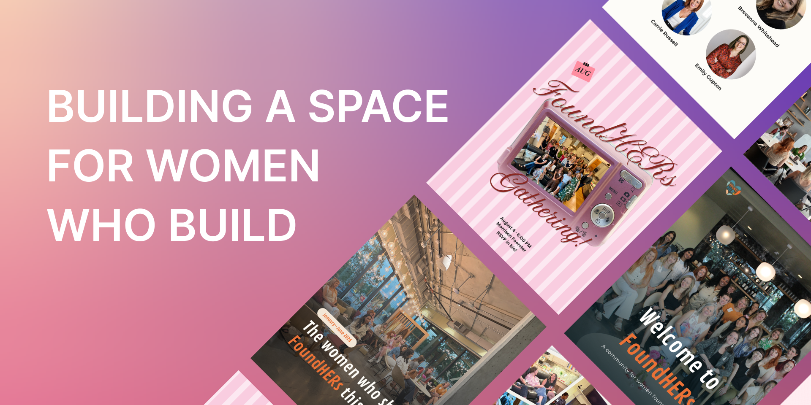
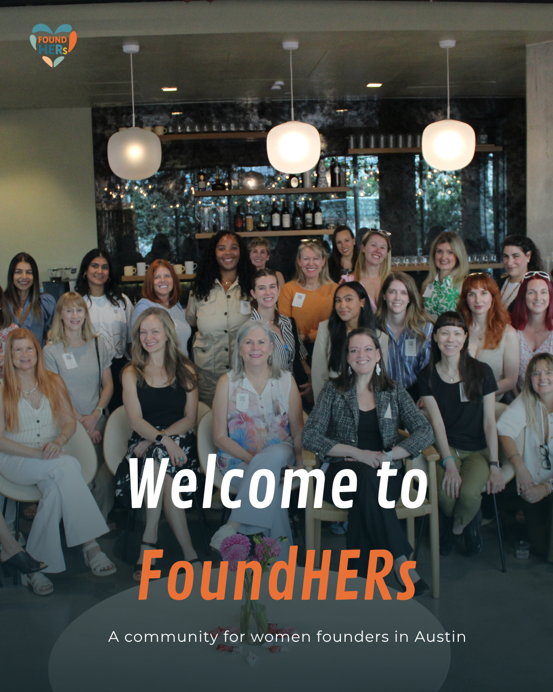
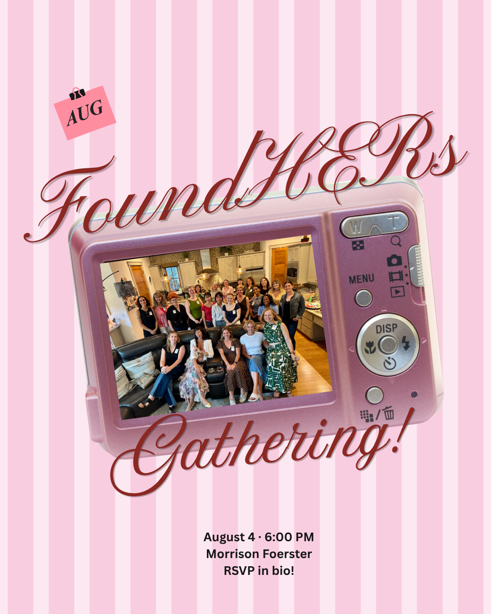
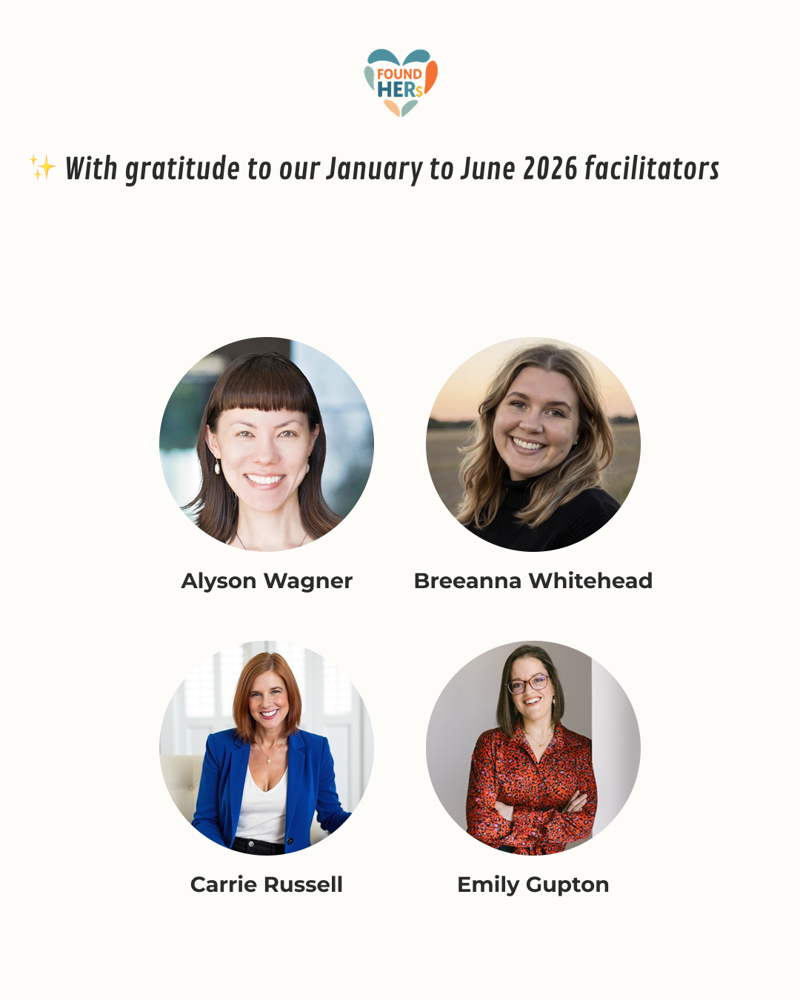
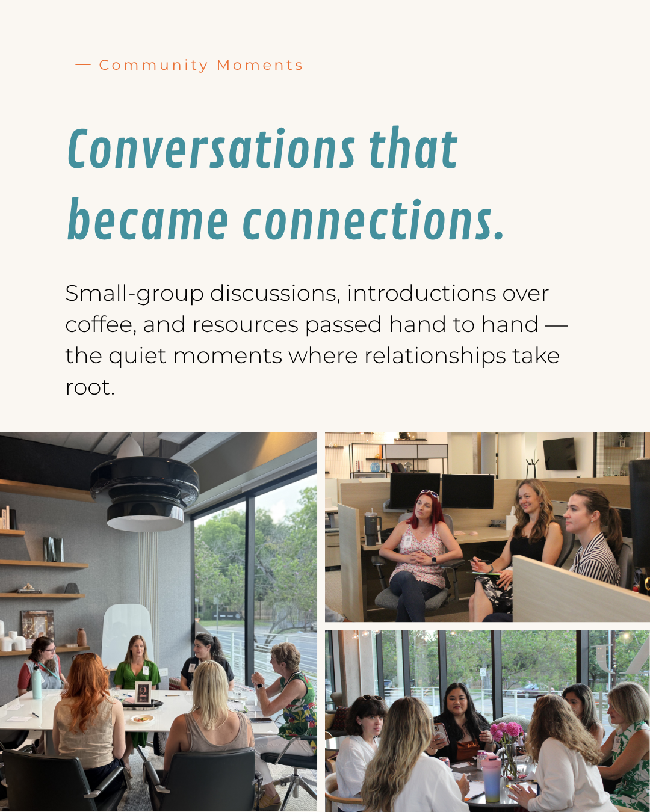
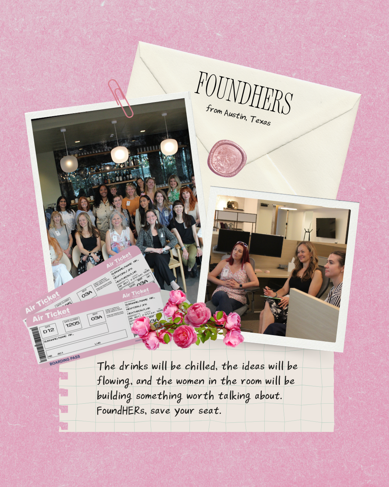
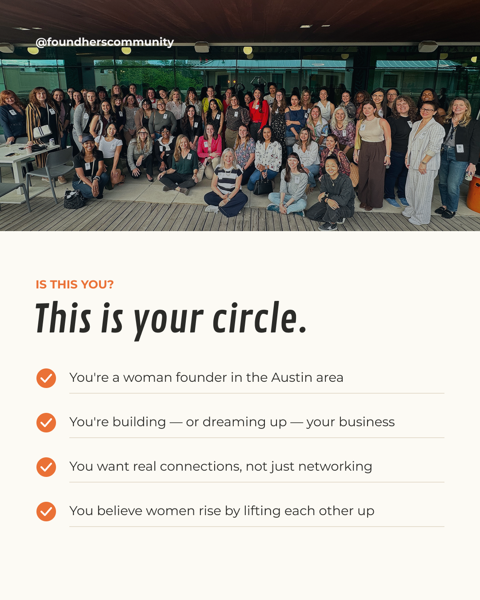

02 · Brand Launch
Building a social media presence for a women founder community from the ground up — visual identity, brand voice, and content system.

Overview
FoundHERs is a community platform dedicated to women entrepreneurs. I built its social media presence from zero — defining the visual identity, brand voice, content pillars, and launch strategy to establish a recognizable and growing community in month one.
The Opportunity
FoundHERs had a strong community concept and an engaged audience waiting to be reached, but no established visual presence or content system. The opportunity was to create a brand that felt warm, credible, and community-driven from day one.
Strategy & Approach
Selected Work






Launch-week carousel series introducing the FoundHERs community.
Short-form video introducing the FoundHERs community.
Results
| Metric | Month One |
|---|---|
| Views | 2.3K |
| Accounts Reached | 654 |
Established a consistent brand presence and content rhythm in the first month, with strong non-follower reach driven by optimized hooks and community-first storytelling.
Takeaway
Launching a brand from zero taught me to prioritize clarity and consistency over volume. A defined visual system and repeatable content templates made it possible to publish high-quality content consistently — and gave the brand a recognizable identity from its very first post.